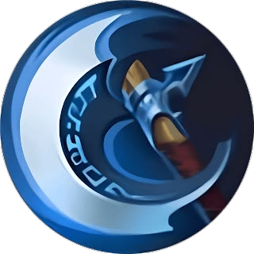
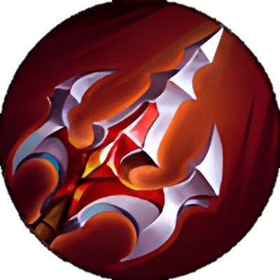
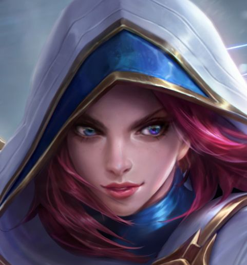
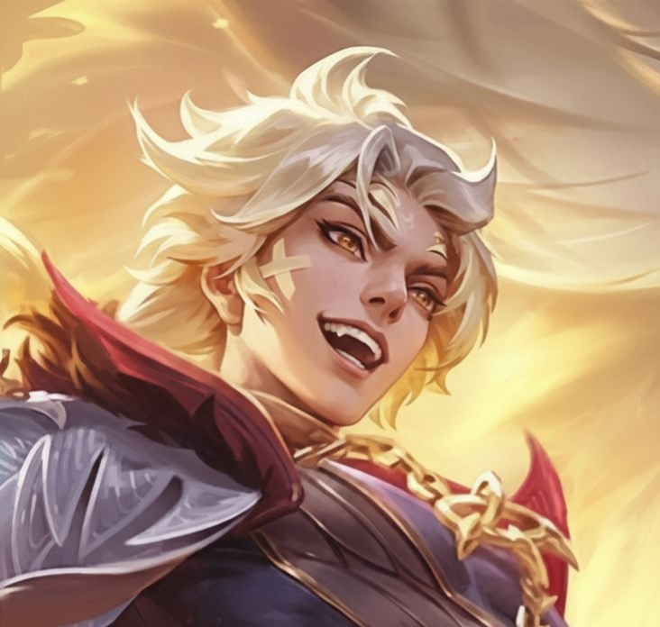
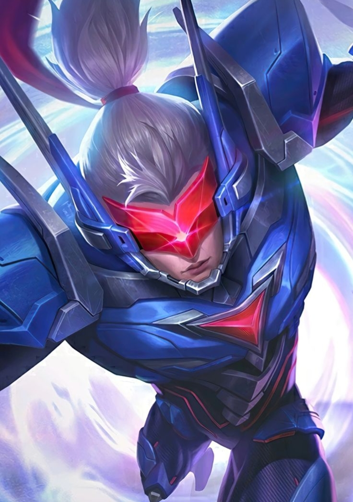

Ling
🗡️ Assassin • Burst • Mobility
🔥 Build Tersakit
-
 Tough Boots
Tough Boots
-

Berserker's Fury -
 Haas's Claws
Haas's Claws
-

Endless Battle -
 Malefic Roar
Malefic Roar
-
 Blade of Despair
Blade of Despair
⚔️ Counter Hero

Natalia

Lukas

Saber
⚠️ Natalia, Lukas, dan Saber tercatat sebagai hero dengan winrate tertinggi melawan Ling di meta saat ini. Ling sangat bergantung pada mobilitas wall-hop dan energi (Lightness Points), jadi hero yang bisa mengganggu ritme combo atau mengunci Ling sebelum sempat kabur akan sangat menyulitkannya.